| 이미지 | ID·준비물 | 상태 | PSB 레이어 | 사용 컷 | 확인 사항 |
|---|---|---|---|---|---|
BG-P02-S12-C02시계탑 상공_최종 결계 | 출력 필요 | 5161 | P02-S00-C01, P02-S12-C03, P02-S18-C02 | 사용자가 이름을 바꾼 최종 결계 배경. S12 C02의 결계 완성에 사용. | |
BG-P01-S11-C01-01버려진 성당내부 | 완료 | — | P02-S00-C02, P02-S05-C01, P02-S06-C01, P02-S06-C02, P02-S06-C03, P02-S06-C04, P02-S06-C05, P02-S15-C04, P02-S16-C02 | 1부에서 이미 출력한 실물 재사용. 2부 PSB에 없어도 누락으로 계산하지 않음. | |
CHA002-03치코링_각성전 | 출력 필요 | 4874, 4875 | P02-S00-C02, P02-S01-C01, P02-S03-C01, P02-S03-C03, P02-S04-C01, P02-S04-C02, P02-S04-C04, P02-S05-C01, P02-S06-C03, P02-S06-C05, P02-S06-C07, P02-S11-C02, P02-S13-C04, P02-S13-C06, P02-S15-C01, P02-S15-C02, P02-S15-C03, P02-S15-C05, P02-S18-C01, P02-S19-C02, P02-S19-C03, P02-S21-C02, P02-S21-C04, P02-S22-C01, P02-S23-C01, P02-S27-C02 | 2부 PSB에 재출력용으로 배치됨. 이번 출력 대상으로 준비. | |
CHB002-03에글랑틴_마녀 | 완료 | — | P02-S00-C02, P02-S05-C01, P02-S06-C01, P02-S06-C03, P02-S06-C05 | 1부에서 이미 출력한 실물 재사용. 2부 PSB에 없어도 누락으로 계산하지 않음. | |
 | BG-P02-S12-C01-01-REV도시 전체 결계 | 출력 필요 | 4864 | P02-S00-C03, P02-S00-C04, P02-S13-C01, P02-S13-C02, P02-S13-C03, P02-S13-C04, P02-S13-C05, P02-S13-C06 | 현재 열린 2부 PSB의 실제 출력 에셋 확인. 인쇄·재단 상태 확인. |
CHA015-02료_학생 | 완료 | — | P02-S00-C03, P02-S13-C01 | 1부에서 촬영한 CHA015-02 료 교복 출력물을 2부 하이라이트와 총력전 통신 인서트에 재사용한다. 별도의 무전기·중계기 소품은 추가하지 않는다. | |
CHA010-02쿠로코_목수 | 완료 | — | P02-S00-C04, P02-S10-C01, P02-S13-C05, P02-S13-C06, P02-S21-C04, P02-S27-C02 | 1부에서 이미 출력한 실물 재사용. 2부 PSB에 없어도 누락으로 계산하지 않음. | |
 | FX-EARTH-WALL목제 이동 방벽 | 출력 필요 | 5011, 5012 | P02-S00-C04, P02-S13-C05, P02-S13-C06 | 현재 열린 2부 PSB의 실제 출력 에셋 확인. 인쇄·재단 상태 확인. |
BG-P02-S01-C01-01공식 결계 골목 | 완료 | — | P02-S01-C01 | 1부에서 이미 출력한 실물 재사용. 2부 PSB에 없어도 누락으로 계산하지 않음. | |
FX008유령불 | 완료 | — | P02-S01-C01, P02-S19-C03 | 1부에서 이미 출력한 실물 재사용. 2부 PSB에 없어도 누락으로 계산하지 않음. | |
CHA001-01주군_고향 | 출력 필요 | 4902 | P02-S01-C01, P02-S02-C01, P02-S03-C01, P02-S03-C03, P02-S04-C01, P02-S04-C04, P02-S08-C01, P02-S10-C01, P02-S13-C06, P02-S19-C02, P02-S21-C02, P02-S21-C05, P02-S24-C01, P03-S01-C01, P03-S03-C01 | 2부 PSB에 재출력용으로 배치됨. 이번 출력 대상으로 준비. | |
 | BG-P2-CITY-MAP2부 도시 지도 전체 | 출력 필요 | 5145 | P02-S02-C01, P02-S03-C04, P02-S04-C03 | 현재 열린 2부 PSB의 실제 출력 에셋 확인. 인쇄·재단 상태 확인. |
BG-P02-S03-C01-01오래된 찻집 | 출력 필요 | 4866 | P02-S03-C01, P02-S03-C02, P02-S03-C03, P02-S04-C01, P02-S04-C04 | 현재 열린 2부 PSB의 실제 출력 에셋 확인. 인쇄·재단 상태 확인. | |
 | CHA007-01세나_고향 | 출력 필요 | 4857 | P02-S03-C01, P02-S03-C03, P02-S04-C01, P02-S04-C04 | 현재 열린 2부 PSB의 실제 출력 에셋 확인. 인쇄·재단 상태 확인. |
NP022「氷華の少女」 セナ 이름표 | 완료 | — | P02-S03-C01 | 1부에서 이미 출력한 실물 재사용. 2부 PSB에 없어도 누락으로 계산하지 않음. | |
CHB001-03이리스_마녀 | 출력 필요 | 4926 | P02-S03-C02, P02-S04-C02, P02-S12-C02, P02-S15-C03, P02-S15-C05, P02-S18-C01, P02-S19-C04, P02-S21-C01, P02-S26-C01, P02-S26-C03 | 2부 PSB에 재출력용으로 배치됨. 이번 출력 대상으로 준비. | |
CHB001-02이리스_흑화전 | 출력 필요 | 4930 | P02-S03-C02 | 현재 열린 2부 PSB의 실제 출력 에셋 확인. 인쇄·재단 상태 확인. | |
CHC004-05평범한 자세의 얼굴 없는 모브 동료 묶음 | 출력 필요 | 4937 | P02-S03-C02, P02-S15-C03, P02-S18-C03 | 현재 열린 2부 PSB의 실제 출력 에셋 확인. 인쇄·재단 상태 확인. | |
PR019-BLOOM만개한 꽃_분리 출력 | 출력 필요 | 4996 | P02-S03-C04 | 현재 열린 2부 PSB의 실제 출력 에셋 확인. 인쇄·재단 상태 확인. | |
 | PR019-WITHERED시든 꽃_분리 출력 | 출력 필요 | 4995 | P02-S03-C04 | 현재 열린 2부 PSB의 실제 출력 에셋 확인. 인쇄·재단 상태 확인. |
 | BG-FLOWERLESS꽃을 뺀 만개 설명 배경 | 출력 필요 | 4935 | P02-S04-C02, P02-S18-C03, P02-S19-C03, P02-S19-C04, P02-S20-C02 | 현재 열린 2부 PSB의 실제 출력 에셋 확인. 인쇄·재단 상태 확인. |
FX003검은 소용돌이 결계 | 완료 | — | P02-S04-C03 | 1부에서 이미 출력한 실물 재사용. 2부 PSB에 없어도 누락으로 계산하지 않음. | |
 | CHA003-03히땅_마법소녀 | 출력 필요 | 4878 | P02-S05-C01, P02-S06-C03, P02-S06-C05, P02-S11-C02, P02-S13-C03, P02-S13-C06, P02-S21-C01, P02-S21-C03, P02-S21-C04, P02-S22-C01, P02-S27-C02 | 2부 PSB에 재출력용으로 배치됨. 이번 출력 대상으로 준비. |
 | FX-THORN-ONE한쪽에만 가시가 난 줄기 | 출력 필요 | 4998, 4999 | P02-S05-C01 | 현재 열린 2부 PSB의 실제 출력 에셋 확인. 인쇄·재단 상태 확인. |
FX032붉은 실 | 가공 필요 | — | P02-S06-C01, P02-S06-C02 | 기출력 붉은 실/실물 실을 사용. PSB 이미지 누락으로 계산하지 않음. | |
CHC001-05시민_분절01 | 완료 | — | P02-S06-C01, P02-S06-C02 | 1부에서 지정된 네 묶음으로 이미 재단해 사용한 실물을 그대로 재사용. 추가 재단·출력 불필요. | |
CHC001-06시민_분절02 | 완료 | — | P02-S06-C01, P02-S06-C02 | 1부에서 지정된 네 묶음으로 이미 재단해 사용한 실물을 그대로 재사용. 추가 재단·출력 불필요. | |
CHC001-07시민_분절03 | 완료 | — | P02-S06-C01, P02-S06-C02 | 1부에서 지정된 네 묶음으로 이미 재단해 사용한 실물을 그대로 재사용. 추가 재단·출력 불필요. | |
CHC001-08시민_분절04 | 완료 | — | P02-S06-C01, P02-S06-C02 | 1부에서 지정된 네 묶음으로 이미 재단해 사용한 실물을 그대로 재사용. 추가 재단·출력 불필요. | |
FX018가시 덩굴 컬러 띠 | 완료 | — | P02-S06-C02, P02-S06-C03 | 1부에서 이미 출력한 실물 재사용. 2부 PSB에 없어도 누락으로 계산하지 않음. | |
CH-HANDS-01치코링_손 | 출력 필요 | 5163 | P02-S06-C04, P02-S16-C02 | 치코링의 내미는 손 1장. 에글랑틴 손과 가까워지게 이동해 잡는 연출에 사용. | |
CH-HANDS-02에글랑틴_손 | 출력 필요 | 4943 | P02-S06-C04, P02-S16-C02 | 에글랑틴의 내미는 손 1장. 별도의 맞잡은 손 그림 없이 두 종이로 접근 연출. | |
BG-P01-S17-C01-01ジュリたんのいない広場 | 완료 | — | P02-S06-C06, P02-S06-C07, P02-S06-C08 | 쥬리 이미지가 빠지고 전광판이 노이즈로 바뀐 배경. 완전한 빈 전광판은 아님. | |
CHB004-03벨_마녀 | 출력 필요 | — | P02-S06-C06, P02-S06-C07, P02-S06-C08 | 2026-11-24 추가 소개 장면. 공식 원화에서 투명 여백만 정리한 신규 준비물. 기존 PSB에 배치된 것으로 간주하지 않는다. | |
NP028「風聞の魔女」ベル 이름표 | 출력 필요 | — | P02-S06-C06 | 2026-11-24 추가 소개 장면. 공식 원화에서 투명 여백만 정리한 신규 준비물. 기존 PSB에 배치된 것으로 간주하지 않는다. | |
BG-P01-S01-C03-01고향 네코다니 | 촬영 완료 | — | P02-S06-C06, P02-S12-C01 | 최신 PNG에서 재단 · 원본 픽셀 크기 100% · 출력 회전 복원. 고향 네코다니 · 세로 조각 1747×2613px · 11-09 1부 출력(사용자 확인) · 1부에서 촬영 완료 · 2부/통합본 에필로그 재사용 없음 | |
CHB004-01메이_고향 | 출력 필요 | — | P02-S06-C06 | 2026-11-24 추가 소개 장면. 공식 원화에서 투명 여백만 정리한 신규 준비물. 기존 PSB에 배치된 것으로 간주하지 않는다. | |
NP029「メイ（猫谷）」이름표 | 출력 필요 | — | P02-S06-C06 | 2026-11-24 추가 소개 장면. 공식 원화에서 투명 여백만 정리한 신규 준비물. 기존 PSB에 배치된 것으로 간주하지 않는다. | |
BG-P01-S05-C01-01주군의 하숙방 | 완료 | — | P02-S07-C01, P02-S08-C01 | 1부에서 이미 출력한 실물 재사용. 2부 PSB에 없어도 누락으로 계산하지 않음. | |
CHA011-02와카_인형 | 완료 | — | P02-S07-C01, P02-S10-C01, P02-S10-C02, P02-S19-C04, P02-S24-C01 | 1부에서 이미 출력한 실물 재사용. 2부 PSB에 없어도 누락으로 계산하지 않음. | |
CHA012-02타마_인형 | 완료 | — | P02-S07-C01, P02-S10-C01, P02-S10-C02, P02-S19-C04, P02-S24-C01 | 1부에서 이미 출력한 실물 재사용. 2부 PSB에 없어도 누락으로 계산하지 않음. | |
PR001낮은 책상 | 완료 | — | P02-S07-C01, P02-S08-C01 | 1부에서 이미 출력한 실물 재사용. 2부 PSB에 없어도 누락으로 계산하지 않음. | |
PR-COMMON-TORN공통 원본_해약 마지막 줄 절취 | 가공 필요 | 4986 | P02-S07-C01, P02-S08-C01 | 공통 원본 4986의 여분을 같은 크기로 출력한 뒤 마지막 조항을 절취. 새 작화 누락이 아니라 절취용 여분·가공 확인. | |
CHA013-01황혼빛 아이_기본 | 출력 필요 | 4924 | P02-S08-C01 | 현재 열린 2부 PSB의 실제 출력 에셋 확인. 인쇄·재단 상태 확인. | |
BG-P01-S02-C01-01골동품상점 내부 | 완료 | — | P02-S09-C01 | 1부에서 이미 출력한 실물 재사용. 2부 PSB에 없어도 누락으로 계산하지 않음. | |
CHA008-02하케 씨_인간 | 완료 | — | P02-S09-C01 | 1부에서 이미 출력한 실물 재사용. 2부 PSB에 없어도 누락으로 계산하지 않음. | |
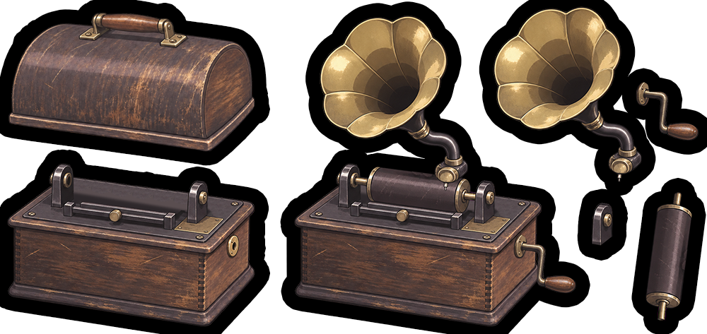 | PR-REC-01실린더 축음기 5부품 세트 | 완료 | 4978 | P02-S09-C01, P02-S10-C01, P02-S10-C03, P02-S11-C02, P02-S19-C01, P02-S19-C04 | PSB 4978 안에 다섯 부품과 조립 참고가 있음. 세트 그림을 별도 출력 준비물 1종으로 중복 계산하지 않음. |
PR-REC-CYLINDER실린더 원통 | 출력 필요 | 4978 | P02-S09-C01, P02-S10-C01, P02-S10-C03, P02-S11-C02, P02-S19-C01, P02-S19-C04 | 현재 열린 2부 PSB의 실제 출력 에셋 확인. 인쇄·재단 상태 확인. | |
 | PR-REC-BOX축음기 상자 | 출력 필요 | 4978 | P02-S09-C01, P02-S10-C01, P02-S10-C03, P02-S11-C02, P02-S19-C01, P02-S19-C04 | 현재 열린 2부 PSB의 실제 출력 에셋 확인. 인쇄·재단 상태 확인. |
 | PR-REC-LID축음기 상자 뚜껑 | 출력 필요 | 4978 | P02-S09-C01, P02-S10-C01, P02-S10-C03, P02-S11-C02, P02-S19-C01, P02-S19-C04 | 현재 열린 2부 PSB의 실제 출력 에셋 확인. 인쇄·재단 상태 확인. |
PR-REC-HORN축음기 나팔 | 출력 필요 | 4978 | P02-S09-C01, P02-S10-C01, P02-S10-C03, P02-S11-C02, P02-S19-C01, P02-S19-C04 | 현재 열린 2부 PSB의 실제 출력 에셋 확인. 인쇄·재단 상태 확인. | |
 | PR-REC-CRANK축음기 태엽 | 출력 필요 | 4978 | P02-S09-C01, P02-S10-C01, P02-S10-C03, P02-S11-C02, P02-S19-C01, P02-S19-C04 | 현재 열린 2부 PSB의 실제 출력 에셋 확인. 인쇄·재단 상태 확인. |
BG-P01-S08-C01-01목공소 내부(오후) | 완료 | — | P02-S10-C01, P02-S10-C02, P02-S11-C01, P02-S11-C02, P02-S21-C04, P02-S27-C02 | 1부에서 이미 출력한 실물 재사용. 2부 PSB에 없어도 누락으로 계산하지 않음. | |
PR-COMMON-FULL공통 원본_전문_해약 마지막 조항 | 출력 필요 | 4986 | P02-S10-C01, P02-S10-C02, P02-S10-C03, P02-S20-C02, P02-S24-C01 | 현재 열린 2부 PSB의 실제 출력 에셋 확인. 인쇄·재단 상태 확인. 마지막 줄 절취용·최종 찢기용은 같은 원본의 별도 여분으로 준비. | |
 | PR035「個別契約」 문서 | 출력 필요 | 5150, 5151, 5152, 5153 | P02-S10-C02 | 설명용 개별 문서는 PSB 소형 계약서 5148~5153을 사용. 별도의 個別契約 도식을 새로 출력하지 않음. |
 | FX039연결선 | 가공 필요 | — | P02-S10-C02 | 실물 실·종이 띠를 사용. PSB 이미지 누락과 구분. |
BG-P01-S08-C04-01목공소 내부(일기 배경) | 완료 | — | P02-S10-C03, P02-S16-C01, P02-S27-C03 | 1부에서 이미 출력한 실물 재사용. 2부 PSB에 없어도 누락으로 계산하지 않음. | |
CHA006-03네네링_마법소녀 | 완료 | — | P02-S11-C01, P02-S13-C03, P02-S21-C01, P02-S21-C04, P02-S22-C01, P02-S27-C02 | 1부에서 이미 출력한 실물 재사용. 2부 PSB에 없어도 누락으로 계산하지 않음. | |
CHA005-03쥬리땅_마법소녀 | 완료 | — | P02-S11-C01 | 1부에서 이미 출력한 실물 재사용. 2부 PSB에 없어도 누락으로 계산하지 않음. | |
 | CHA004-03레오나_마법소녀 | 출력 필요 | 4890 | P02-S11-C02, P02-S13-C02, P02-S13-C06, P02-S21-C01, P02-S21-C02, P02-S21-C04, P02-S22-C01, P02-S25-C01, P02-S27-C01, P02-S27-C02 | 2부 PSB에 재출력용으로 배치됨. 이번 출력 대상으로 준비. |
CHA014-03엔마_마법소녀 | 완료 | — | P02-S11-C02, P02-S13-C04, P02-S21-C04, P02-S22-C01, P02-S27-C02 | 1부에서 이미 출력한 실물 재사용. 2부 PSB에 없어도 누락으로 계산하지 않음. | |
BG-P02-S12-C01시계탑 상공_황혼빛 | 출력 필요 | 4864 | P02-S12-C01, P02-S12-C02 | 사용자 추가 황혼빛 배경. 이리스·뮤게 설계 보고의 S12 C01에 사용. | |
CHB005-03뮤게_마녀 | 출력 필요 | 5003 | P02-S12-C01, P02-S12-C02, P02-S15-C01, P02-S15-C02, P02-S23-C01 | 현재 열린 2부 PSB의 실제 출력 에셋 확인. 인쇄·재단 상태 확인. | |
 | NP027「造花の魔女」ミュゲ・シエル 이름표 | 출력 필요 | 5090 | P02-S12-C01 | 현재 열린 2부 PSB의 실제 출력 에셋 확인. 인쇄·재단 상태 확인. |
CHB005-01치사_고향 | 출력 필요 | — | P02-S12-C01 | 2026-11-24 추가 소개 장면. 공식 원화에서 투명 여백만 정리한 신규 준비물. 기존 PSB에 배치된 것으로 간주하지 않는다. | |
NP030「チサ（猫谷）」이름표 | 출력 필요 | — | P02-S12-C01 | 2026-11-24 추가 소개 장면. 공식 원화에서 투명 여백만 정리한 신규 준비물. 기존 PSB에 배치된 것으로 간주하지 않는다. | |
 | BG-MUGUET-CORE공식 시계탑 코어 입구 | 출력 필요 | 5120 | P02-S15-C01, P02-S15-C02 | 현재 열린 2부 PSB의 실제 출력 에셋 확인. 인쇄·재단 상태 확인. |
 | BG-P02-S15-C01-01시계탑 결계 코어 내부 | 출력 필요 | 4862 | P02-S15-C03, P02-S15-C05, P02-S18-C01, P02-S19-C01, P02-S19-C02, P02-S19-C05, P02-S20-C01, P02-S20-C03, P02-S21-C01, P02-S21-C02, P02-S21-C03, P02-S21-C05, P02-S22-C01, P02-S23-C01, P02-S24-C01 | 현재 열린 2부 PSB의 실제 출력 에셋 확인. 인쇄·재단 상태 확인. |
CHC004-06모브 동료 검은 뒷종이 | 출력 필요 | 5108 | P02-S15-C03, P02-S20-C02 | 현재 열린 2부 PSB의 실제 출력 에셋 확인. 인쇄·재단 상태 확인. | |
PR011-01치코링 일기_빈 줄노트 | 출력 필요 | 5215 | P02-S16-C01 | 청색 가죽 일기. 작은 민무늬 L자 금속 모서리 보호구, 장식 없는 안쪽과 평평하게 이어지는 옅은 줄노트. S16 어제·오늘 속지 부착 바탕. | |
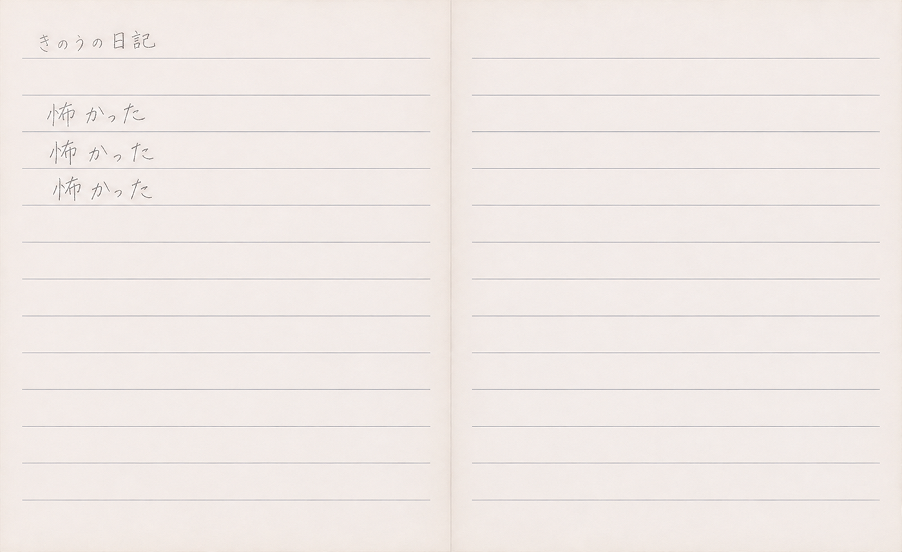 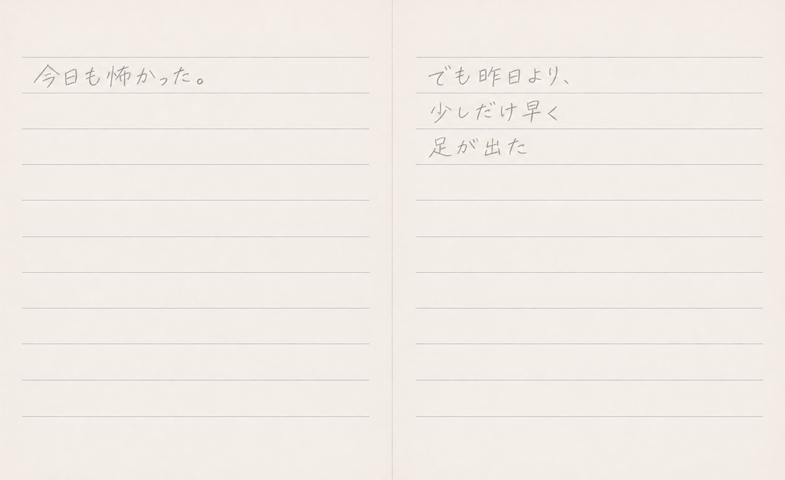 | PR-DIARY-PAGES일기 속지_어제와 오늘_넘김 | 출력 필요 | 5214 | P02-S16-C01 | 2043×1252px 속지 두 장. 작은 きのうの日記 / きょうの日記 머리말, 문단 여백과 옅은 줄노트. 어제 怖かった 세 번과 오늘 원문 유지. 구체적인 날짜·날씨는 추가하지 않음. |
PR049씨앗 | 출력 필요 | — | P02-S19-C03 | 구슬 속 씨앗은 4980~4985에 있지만 독립 씨앗 종이는 없음. 씨앗만 분리한 출력물 필요. | |
 | CHB001-03-CU이리스_마녀_표정 클로즈업 | 출력 필요 | 5103, 5102 | P02-S19-C05 | 현재 열린 2부 PSB의 실제 출력 에셋 확인. 인쇄·재단 상태 확인. |
 | CHB003-03라르므_마녀 | 출력 필요 | 4842 | P02-S20-C01, P02-S20-C02, P02-S20-C03, P02-S21-C01, P02-S21-C03, P02-S24-C01 | 현재 열린 2부 PSB의 실제 출력 에셋 확인. 인쇄·재단 상태 확인. |
NP026「悲嘆の魔女」 ラルム 이름표 | 완료 | — | P02-S20-C01 | 1부에서 이미 출력한 실물 재사용. 2부 PSB에 없어도 누락으로 계산하지 않음. | |
 | PR-SEED-GLASS씨앗 하나를 가둔 검은 유리구슬 | 출력 필요 | 4980, 4981, 4982, 4983, 4984, 4985 | P02-S20-C03 | 현재 열린 2부 PSB의 실제 출력 에셋 확인. 인쇄·재단 상태 확인. |
FX-REV-WIND히땅 바람 이펙트 | 출력 필요 | 5136 | P02-S21-C01, P02-S23-C01 | 현재 열린 2부 PSB의 실제 출력 에셋 확인. 인쇄·재단 상태 확인. | |
 | FX-REV-FLASH네네링 섬광 이펙트 | 출력 필요 | 5137 | P02-S21-C01, P02-S23-C01 | 현재 열린 2부 PSB의 실제 출력 에셋 확인. 인쇄·재단 상태 확인. |
FX001불꽃 띠 | 완료 | — | P02-S21-C01, P02-S23-C01 | 1부에서 이미 출력한 실물 재사용. 2부 PSB에 없어도 누락으로 계산하지 않음. | |
FX048꽃잎 방벽 | 가공 필요 | — | P02-S21-C01 | 사용자 확인: 아직 출력하지 않았으며 실제로 필요한 소품인지 연출 재검토 예정. 현재 PSB 미배치이나 필수 누락 집계에서 제외하고 검토 대기로 유지. | |
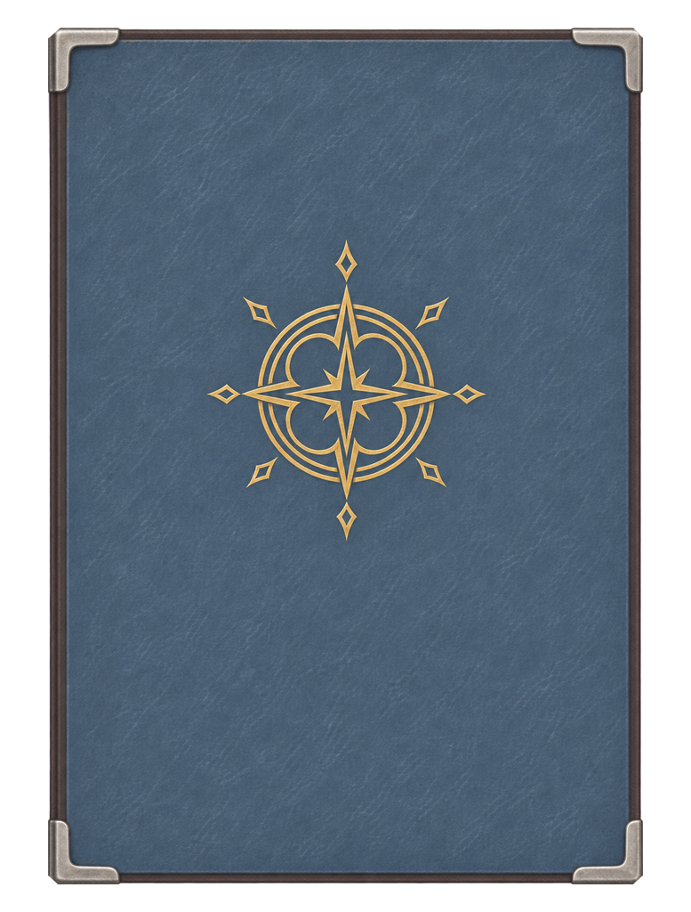 | PR-DIARY-CLOSED일본어 일기_닫힘_휴대용 | 출력 필요 | 5172 | P02-S22-C01 | 청색 가죽·가운데 금색 별과 작은 민무늬 L자 보호구. 두께나 종이 단면이 드러나지 않는 정면 표지이며 펼친 일기와 같은 색감. 기존 S22 휴대용 출력 규격 유지. |
FX-REV-MASK뮤게 가면 이펙트 | 출력 필요 | 5140 | P02-S23-C01 | 현재 열린 2부 PSB의 실제 출력 에셋 확인. 인쇄·재단 상태 확인. | |
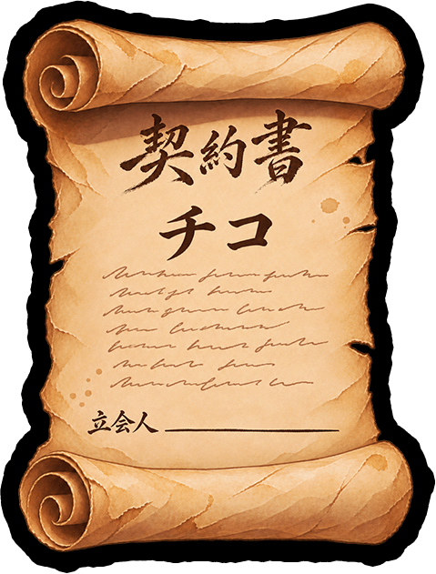 | PR020-S치코 계약서_작은버전 | 출력 필요 | 5149 | P02-S24-C01 | 현재 열린 2부 PSB의 실제 출력 에셋 확인. 인쇄·재단 상태 확인. |
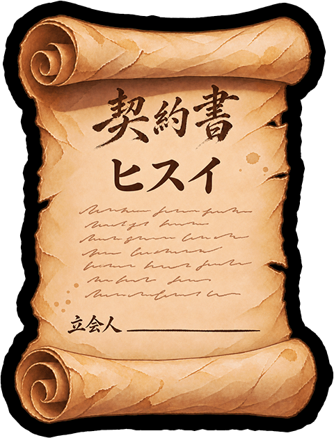 | PR007히스이의 일본어 계약서 | 출력 필요 | 5148 | P02-S24-C01 | 2부 PSB에 재출력용으로 배치됨. 이번 출력 대상으로 준비. |
| PR-CONTRACT-S계약서_작은버전1~4 | 출력 필요 | 5150, 5151, 5152, 5153 | P02-S24-C01 | 현재 열린 2부 PSB의 실제 출력 에셋 확인. 인쇄·재단 상태 확인. |
 | CHB-LARME-WHITE라르므_흰실루엣 | 출력 필요 | 5156 | P02-S24-C01 | 라르므 복제본 5156을 앞면과 같은 윤곽으로 재단한 뒤 뒷면을 보이게 사용. 흰색 별도 인쇄나 새 작화 불필요. |
BG-P02-S27-C01-01해방된 도시 밤하늘 | 출력 필요 | 4859 | P02-S25-C01 | 현재 열린 2부 PSB의 실제 출력 에셋 확인. 인쇄·재단 상태 확인. | |
CHA002-02치코_평상복 | 완료 | — | P02-S25-C01, P02-S26-C01, P02-S26-C03, P02-S27-C01 | 1부에서 이미 출력한 실물 재사용. 2부 PSB에 없어도 누락으로 계산하지 않음. | |
CHA003-01히스이_평상복 | 완료 | — | P02-S25-C01, P02-S27-C01 | 1부에서 이미 출력한 실물 재사용. 2부 PSB에 없어도 누락으로 계산하지 않음. | |
CHA006-01네네_평상복 | 완료 | — | P02-S25-C01 | 1부에서 이미 출력한 실물 재사용. 2부 PSB에 없어도 누락으로 계산하지 않음. | |
BG-P02-S27-C01-01공식 결계 해제 후 별밤 | 출력 필요 | 4859 | P02-S26-C01, P02-S26-C03 | 현재 열린 2부 PSB의 실제 출력 에셋 확인. 인쇄·재단 상태 확인. | |
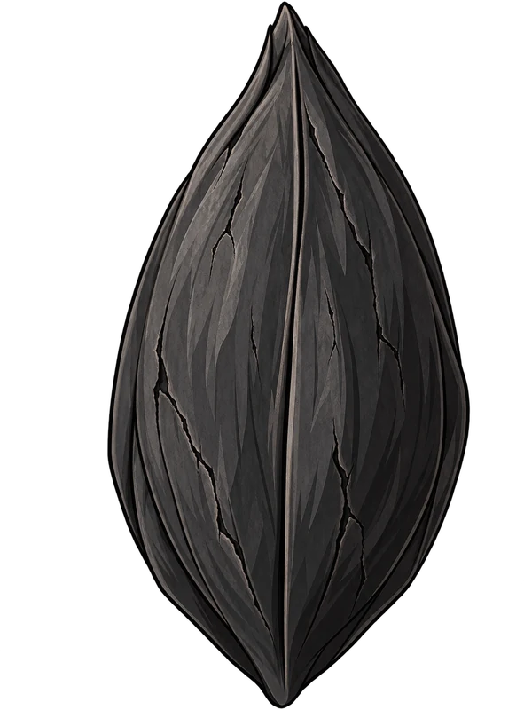 | PR057타버린 씨앗 그림 | 출력 필요 | — | P02-S26-C01 | 현재 2부 PSB에 타버린 씨앗 그림이 없음. 기존 전달 원본을 추가 배치·출력. |
BG-GARDEN-DOORS들어오고 나가는 문이 있는 정원 | 출력 필요 | 5117 | P02-S26-C02 | 현재 열린 2부 PSB의 실제 출력 에셋 확인. 인쇄·재단 상태 확인. | |
BG-P02-S27-C01-01밤하늘 | 출력 필요 | 4859 | P02-S27-C01 | 현재 열린 2부 PSB의 실제 출력 에셋 확인. 인쇄·재단 상태 확인. | |
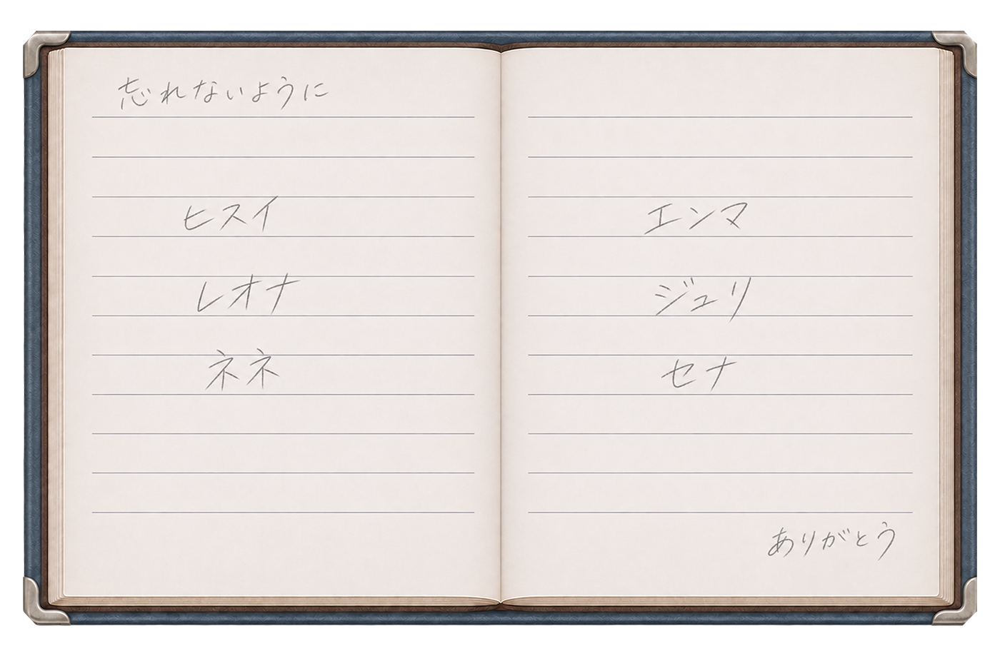 | PR011-02치코링 일기_다급한 이름 | 출력 필요 | 5216 | P02-S27-C03 | 같은 청색 일기와 민무늬 보호구. 작은 머리말 忘れないように 아래 여섯 이름을 다급한 연필 글씨로 적고 ありがとう로 마무리한 짧은 기록. S27 C03 사용. |
BG-P02-S27-C04-01흰 바탕 | 완료 | — | P02-S27-C04 | 1부에서 이미 출력한 실물 재사용. 2부 PSB에 없어도 누락으로 계산하지 않음. | |
BG-P03-S01-C01-01네코저택 내부 낮 | 완료 | — | P03-S01-C01 | 1부에서 이미 출력한 실물 재사용. 2부 PSB에 없어도 누락으로 계산하지 않음. | |
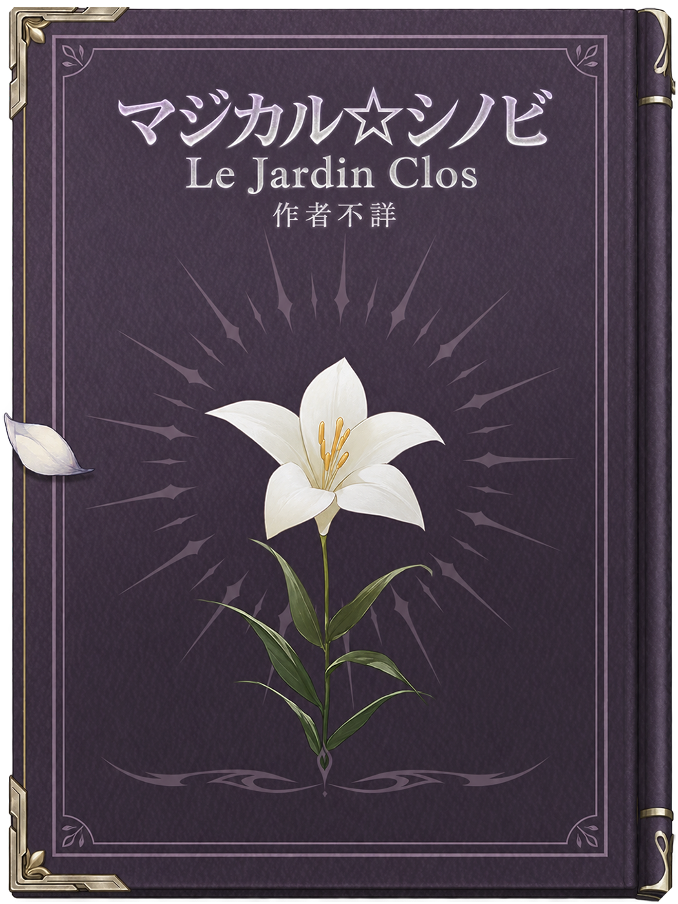 | PR062-CLOSED낡은 각본집_닫힘 | 출력 필요 | 5170 | P03-S01-C01 | Countdown_BookCover의 보라색 백합 표지 유지. 사용자 지정 マジカル☆シノビ / Le Jardin Clos / 作者不詳 세 문구로 재작화. |
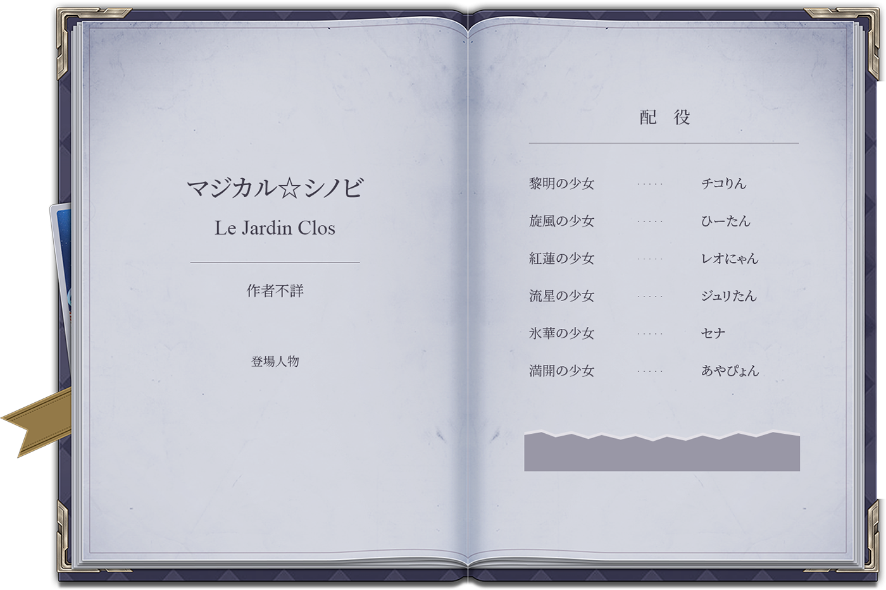 | PR062-OPEN낡은 각본집_펼침 | 출력 필요 | 5171 | P03-S01-C01 | Countdown 원본의 펼친 책 그림을 유지. 고전 희곡집 참고로 명조체 역할·배우 2열, 넓은 여백, 점선으로 배역 여섯 줄과 읽을 수 없는 마지막 줄 찢김 표현. 원본 바탕 및 편집 가능 조판 PSD 보관. |
CHA005-01쥬리_고향 | 완료 | — | P03-S01-C01 | 1부에서 이미 출력한 실물 재사용. 2부 PSB에 없어도 누락으로 계산하지 않음. | |
BG-P01-S01-C01-01네코저택 외부 낮 | 완료 | — | P03-S02-C01, P03-S02-C02 | 1부에서 이미 출력한 실물 재사용. 2부 PSB에 없어도 누락으로 계산하지 않음. | |
CHA002-01치코_고향 | 완료 | — | P03-S02-C01 | 1부에서 이미 출력한 실물 재사용. 2부 PSB에 없어도 누락으로 계산하지 않음. | |
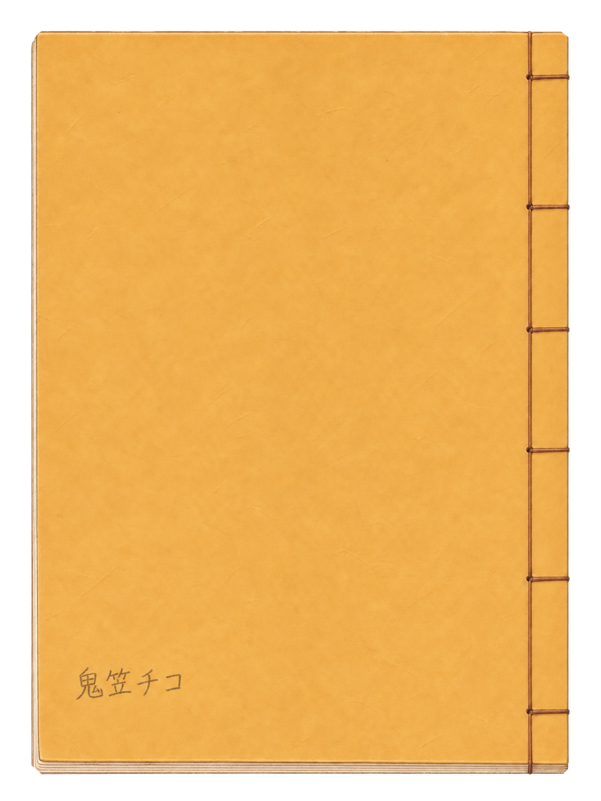 | PR068-01고향 일기_닫힘 | 출력 필요 | 5177 | P03-S02-C01 | 깨끗한 황토색 동양풍 실 제본 서책. 아래쪽에 여중생 필체로 쓴 鬼笠チコ 이름. 에필로그에서 닫힌 일기에서 펼친 속지로 전환. |
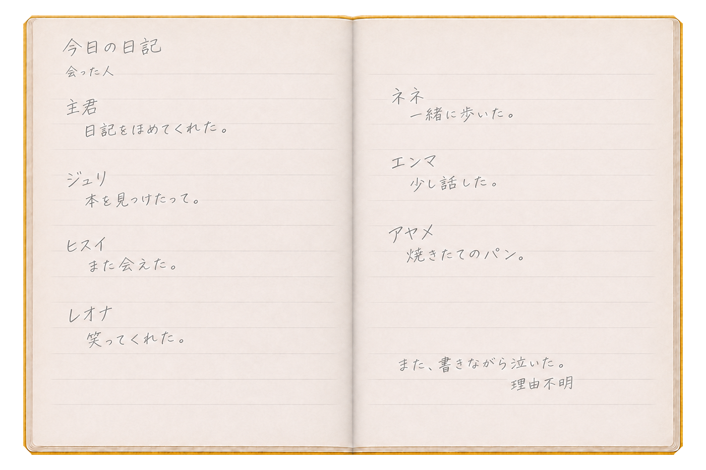 | PR068-02고향 일기_펼침·이유 불명 | 출력 필요 | 5178 | P03-S02-C01 | 황토색 동양풍 서책과 이어지는 깨끗한 옅은 줄노트. 今日の日記 / 会った人 머리말, 주군·쥬리·히스이·레오나·네네·엔마·아야메와 짧은 메모, 理由不明. 닫힌 鬼笠チコ 서책과 색감 대조 완료. |
CHA002-01-CU치코_고향_클로즈업 | 출력 필요 | 5164 | P03-S02-C02 | 사용자가 추가한 CHA002-01-CU 레이어의 치코·인형 부품을 영상용으로 조립한 클로즈업. 원본 출력 배치는 유지. | |
BG-P01-S01-C01-01아야메의 담장과 꽃밭 | 완료 | — | P03-S03-C01 | 현재 배치도는 1부 네코저택 외부 낮 그림(png-BG01)을 그대로 사용. 기존 출력 배경판으로 촬영하며 별도 새 배경 누락으로 계산하지 않음. | |
CHB001-01아야메_고향 | 완료 | — | P03-S03-C01 | 1부에서 이미 출력한 실물 재사용. 2부 PSB에 없어도 누락으로 계산하지 않음. | |
PR070빵 | 출력 필요 | 5128 | P03-S03-C01 | 현재 열린 2부 PSB의 실제 출력 에셋 확인. 인쇄·재단 상태 확인. |